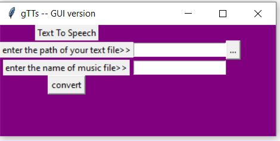

Google Text-to-Speech GUI version
This program use gtts module and tkinter module. In this GUI version , all necessary widget are there but not in a good fashion. Anyone can convert there text to speech but there are some protocols u have to follow:
Internet Connection is Must.
Text File must have .txt extension.
Text File must not contain any special corrector which cannot be converted into a speech like (,),#,&,^.....etc

The code for the program is>>
#importation
from tkinter import *
import gtts
from playsound import playsound
from tkinter import filedialog
from tkinter import ttk
def browseFiles():
filename = filedialog.askopenfilename(initialdir = "/",title = "Select a File",filetypes = (("Text files","*.txt*"),("all files","*.*")))
# Change label contents
path.set(filename)
def conversion(path,music):
address = path.get()
print(address)
f = open(address)
mytext = f.read()
tts = gtts.gTTS(text = mytext,lang ='en', tld ='co.in' ,slow='False')
tts.save(music.get() + ".mp3")
f.close()
#Driver Code
if __name__ == '__main__':
#GUI layout
gui = Tk()
gui.configure(background = "purple")
gui.title('gTTs -- GUI version')
gui.geometry('370x150')
path = StringVar()
music = StringVar()
Title = Label(gui,text = "Text To Speech").grid(row = 1,column =1)
Label1 = Label(gui,text='enter the path of your text file>>').grid(row=2,column=1)
Label2 = Label(gui,text='enter the name of music file>>').grid(row=3,column=1)
Entry1 = Entry(gui,textvariable=path).grid(row=2,column =2)
Entry2 = Entry(gui,textvariable=music).grid(row=3,column=2)
button_explore = Button(gui,text = "...",command = browseFiles).grid(row =2,column = 4)
Button1 = Button(gui,text='convert',command=lambda:conversion(path,music)).grid(row =4,columnspan=2)
gui.mainloop()
Thanks You for reading this documentation
For any query, contact me at chandrasayyam@gmail.com